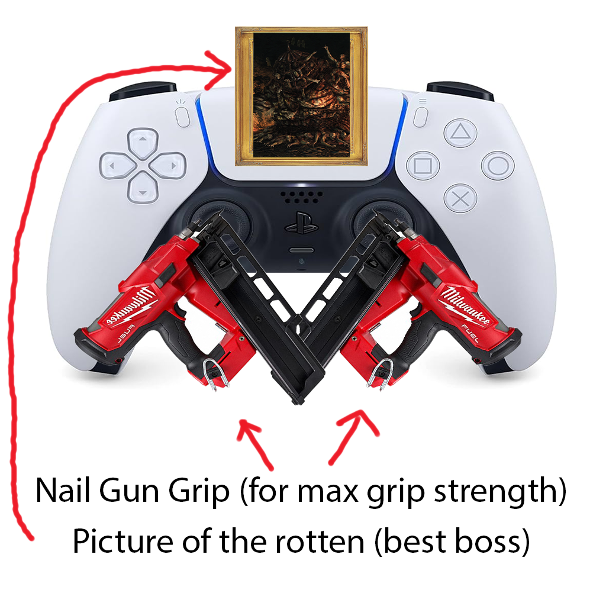

Darksouls 2 -- a widely loved staple of the Darksouls series, whose gameplay lead the way towards a brighter souls-like future, including entries such as: Darksouls 3, Darksouls Remastered, Darksouls 2: Scholar Of The First Sin (a.k.a Darksouls 2 2)
Don't even get me started on how well they designed the game, it plays just like the former Darksouls, but better! Not to mention how the game only gets better after the Shrine of Winter -- Drangleic castle is the pinacle of Darksouls map design. I also love how all of the iconic areas after the main castle, my favorite of which being the Shrine Of Amana. The Shrine of Amana is wonderful because it acts as a skills test, even after beating 90% of the game before it. It's also wonderful how they balanced the area so well, specifically making the difficulty fair and not just spamming enemies for no reason other than "What if we tortured the player countless enemies", which from software tends to do often.
One thing I will say this game is missing is toes. Which sounds weird but after fighting malenia in Elden Ring, you come to realize that toes are really what adds that "Miyazaki Touch" to Darksouls. I cant blame the team for not modeling every character's bare toes (animations included) because Miyazaki wasn't the director of Darksouls 2. I'm incredibly glad that in later games toes are a feature rather than an oversight.
Personally, I love majula -- it's very home-y, but from here you have plenty of choices of where to go next. Because I love the Black Glutch so much, I obviously have to run straight towards the giant looming pit ever so graciously taunting me. Surviving this fall is impossible early game, but my love transcends the boundaries of the Darksouls 2 code base. If you are like me, we can both agree that the black glutch is perfect, but gate keeping is not the souls-like way of doing things: So we must now "transcend the code base" (open cheat engine), and pursuade the game from its cruel gate keeping tricks preventing us from perfection (activate invinciblity, traverse the pit). Only now can we experience true joy.

All the homies love the Agility stat. I only realized my love for this stat during the Lost Sinner's boss fight. I personally think it was an amazing choice letting the player choose their difficulty behind a paywall of souls. If you really think about it, it does make sense: The challenge runners don't need to activate any hard mode mods because the game natural takes away your i-frames, and the players struggling still have to struggle until they git gud, and only after they get enough souls from being good can they choose to lower the difficulty of the game.
Another reason why the Agility stat is a great choice, is because it balances the game around your choices rather than the actual progression of the game. Don't get me wrong, I love myself some progress based difficulty -- the farther you travel the harder it gets: moving from the United States to Russia illegally on a whim with no research for example. But let's be honest with ourselves, when you choose your own difficulty -- only then does it actually become "your game", so by adding the Agility stat, from software is really saying "We respect the ownership of games". (Don't tell Ubisoft, they'd be pissed when they discover ownership is a real thing)
One thing I love that this game did keep compared to later from software games is the slower boss fights. I don't mind fast boss fights but it's nice to have time to reflect on your life between attacks. I heard a rumor that the Old Iron King was balanced around -- not the player -- but instead, around comtemplation of lifes deepest questions. This rumor makes a lot of sense, as I myself started contemplating life while fighting this boss, not to mention, the boss itself is very predictable to the point where a toddler could fight him -- again, great because half of the Darksouls community consists of toddlers.
Don't get me wrong, I love the darksouls community (besides Elden Ring gank hosts). I just had to get a quick friendly jab off, which brings me to the next point: I love how you can light spam and there is no reprecussions. From software did an amazing job making Darksouls 2, but honestly, I think we can all agree that they wasted a lot of time making movesets for weapons beyond a more than a simple R1. Instead, they could have spent all of that time wasted on weapon movesets on other more important things, such as actually remastering Darksouls 1, or even making Darksouls 3 an actual good game.
Out of all the things this game does right, I've only come up with 2 flaws. Unfortunately, with the release of Darksouls 2: Scholar of The First Sin, the game didn't come with a specially built controller equipt with nail guns for joysticks. In any other game this would be fine, but for us intense Darksouls 2 fans we need that extra grip for our controllers whether it be super-glued sticks or nail guns puncturing our thumbs to the controller. This was a heavy blunder on From software's end, they could have made a killing off of these controllers.
My other flaw I found was that on steam, Darksouls 2 (Scholar edition) is only $40? That doesn't make any sense nowadays. The game is AAA quality, and yet it doesn't share the price tag of $70? A little weird is what that is. From software should raise the price and really start to value their work. This is the best souls game, but only $40? Come on, lets pump those numbers up to $70 at least, and maybe shoot for $90 when the game gets remastered.